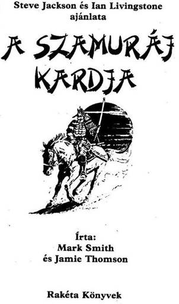
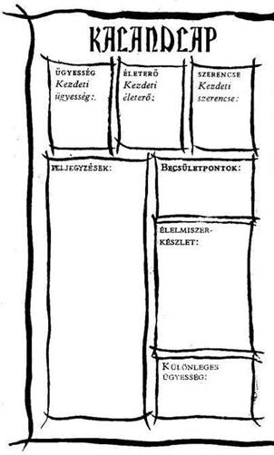
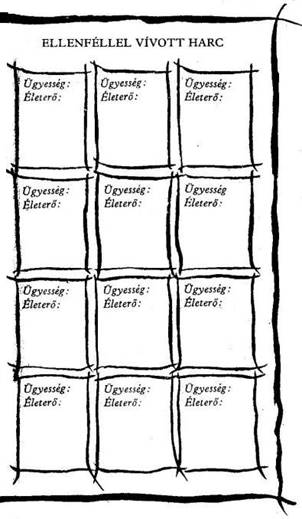
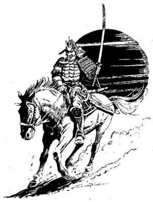

A mű eredeti címe:
Sword of the Samurai
Alan Langford illusztrációival
Fordította:
Varsányi Mária
Concept copyright © Steve Jackson
and lan Livingstone, 1986
Text copyright © Mark Smith
and Jamie Thompson, 1986
Illustration copyright © Alan Langford, 1986
Cover illustration Peter Andrew Jones copyright ©
Solar Wind Ltd.
Ali rights reserved
Hungarian translation © Varsányi Mária, 1991
Ennek a könyvnek te vagy a hőse. Te vívsz meg a kocka segítségével az óriásokkal és a szörnyekkel, magad döntesz, hogy merre haladj tovább, kivel barátkozz és kivel csatázz. Nem pusztán az író fantáziája irányítja a történetet, hanem a te bátorságod, kíváncsiságod, leleményességed, kalandvágyad és józan eszed.
Játék és regény egyszerre, amit a kezedben tartasz. Kalandos vállalkozás, amelybe bele is lehet bukni, de ha jól döntesz, sikerrel jársz.
Így hát ezt a könyvet ne úgy olvasd, ahogy egyébként olvasni szoktál. Mint látod, itt még az oldalak sincsenek megszámozva a bevezető után, hanem a hosszabb-rövidebb bekezdések viselnek számokat egytől négyszázig. Ezek között előre-hátra lapozva haladsz előre a történetben a saját igényeid szerint. Ha kardot rántasz az ellenségre, máshová lapozol, mintha elbújnál előle.
Barbár harcosok, varázslók, szörnyetegek, törpék népesítik be ezt a fantasztikus világot. Mi kell ahhoz, hogy ne bukj el közöttük? Csak az, ami a mindennapi élethez is: ügyesség, jártasság, ötletesség: az, hogy felkészülten várd a nehézségeket.
És Szerencse, amely nélkül az előző három talán mit sem ér, de ha csak erre számítasz, biztosan cserbenhagy.
Hogy mit jelent az ÜGYESSÉG, ÉLETERŐ és SZERENCSE ebben a könyvben, megtudod a következőkből. Ha netán nem lenne teljesen világos a dolog, ne törődj vele. Bátran előre! Vágj neki az olvasásnak, menet közben minden a helyére kerül! De ha elfelejtenéd, hogyan kell jól megvívni egy csatát, hogyan menekülhetsz, hogyan gyógyíthatod magad a játék szabályai szerint, nyugodtan visszalapozhatsz.
Játékszabály
Mielőtt belevágnál ebbe a kalandba, fel kell mérned, mennyire vagy erős, illetve gyenge. Van kardod és pajzsod az útra, meg egy hátizsákod étellel, itallal. Szamuráj vagy, aki mindig készen áll, hogy hősies küldetésekben vegyen részt.
Dobókockával döntsd el kezdő ÜGYESSÉG és ÉLETERŐ pontjaidat, hogy megtudd, milyen hatékonyak voltak előkészületeid. A 16. oldalon találod a Kalandlapot, amelyre feljegyezheted kalandod részleteit. Ugyanitt jelölheted ÜGYESSÉG és ÉLETERŐ pontjaidat is.
Jól teszed, ha ceruzával írod a pontokat a Kalandlapra, vagy fénymásolatot készíttetsz erről az oldalról, hogy újabb játékra is felhasználhasd.
ÜGYESSÉG, ÉLETERŐ ÉS SZERENCSE
Dobj az egyik kockával. Adj 6-ot a dobott számhoz, és az összeget írd be a Kalandlap ÜGYESSÉG négyzetébe.
Dobj mindkét kockával, és az eredményhez adjál 12-t, a kapott számot írd be az ÉLETERŐ négyzetbe.
Van egy SZERENCSE rovat is. Ehhez egy kockával dobj, és 6-ot adj az eredményhez, majd az összeget írd be 8 SZERENCSE négyzetbe.
Különböző okok miatt, melyeket majd részletesen elmagyarázunk, ÜGYESSÉG, ÉLETERŐ és SZERENCSE pontjaid a kalandok során folyamatosan változnak. Pontosan kell vezetned őket, ezért azt tanácsoljuk, hogy kis betűkkel írj a négyzetekbe, vagy tarts kéznél radírt. De soha ne töröld ki a kezdő pontjaidat, mert szerezhetsz ugyan további ÜGYESSÉG, ÉLETERŐ és SZERENCSE pontokat, de összegük soha nem lépheti túl a kezdeti értéket.
ÜGYESSÉG pontjaid kardvívótudásodat és általános harckészségedet mutatják. Nem árt minél több ilyen pontra szert tenni. Az ÉLETERŐ pontok jelzik kondíciódat, az akaraterődet, hogy túlélj egy-egy helyzetet, továbbá eltökéltségedet és állóképességedet; minél magasabb az ÉLETERŐ pontszám, annál hosszabb ideig maradhatsz életben. A SZERENCSE pontok mutatják, mennyire vagy szerencsés ember.
A szerencse és a varázslat az úr abban a fantasztikus birodalomban, amelybe most behatolsz.
A CSATA
Sűrűn találsz majd olyan oldalakat, ahol azt az utasítást kapod, hogy küzdj meg valamilyen ellenféllel. A csata menete a következő:
Először jegyezd fel ellenfeled ÜGYESSÉGÉT és ÉLETEREJÉT a Kalandlap első üres, ELLENFÉLLEL VÍVOTT HARC feliratot viselő rovatába. Ellenfeled pontszámait alkalommal megadja a könyv, amikor összecsapsz valamelyikükkel.
A harc menete
CSATA EGYNÉL TÖBB ELLENFÉLLEL
Előfordul majd néha, hogy egynél több személy vagy teremtmény támad rád. Ilyenkor minden egyes Fordulóban külön-külön küzdenek meg veled, de neked kell választanod, melyikükkel csapsz össze először. Kiválasztott ellenfeledet a szokásos módon támadd meg. A másikkal szemben viszont dobókockával kell eldöntened TÁMADÓERŐD nagyságát, ugyancsak az ismert módon, de még akkor sem ejtesz rajta sebet, ha a te TÁMADÓERŐD a nagyobb. Úgy tekinted, mintha csak kivédted volna az ő támadását. Mindazonáltal, ha a te TÁMADÓERŐD az övénél alacsonyabb pontszámú, akkor ugyancsak a szokott módon te sebesülsz meg.
SZERENCSE
Kalandjaid során, akár csatában, akár olyan helyzetekben, amikor á SZERENCSE dönthet sorsod felől (az erre vonatkozó utasítást az adott fejezetpontok alatt megkapod), a SZERENCSÉDRE is számíthatsz, hogy az események kimenetele számodra kedvező legyen. De vigyázz! A SZERENCSÉRE számítani kockázatos, és ha balszerencsés vagy, az eredmény végzetes lehet.
SZERENCSÉDET a következő módon teheted próbára. Dobj mindkét kockával. Ha a kapott szám nem nagyobb, mint a jelenlegi SZERENCSE pontszámod, az eredmény kedvező. Ha magasabb számot dobsz, mint jelenlegi SZERENCSE pontszámod, balszerencséd volt, és vállald a következményeit.
Úgy hívjuk ezt, hogy „Tedd próbára a SZERENCSÉDET!” Minden alkalommal, amikor próbára teszed a SZERENCSÉDET, 1 pontot le kell vonnod SZERENCSE pontszámodból. Így hamar rájössz, hogy a SZERENCSÉRE hagyatkozni kockázatos.
A SZERENCSE használata csatában
A könyv bizonyos oldalain felszólítunk, hogy Tedd próbára SZERENCSÉDET!, és közöljük, hogy SZERENCSÉD volt-e vagy sem. A csatákban viszont mindig te döntesz, hogy a SZERENCSÉD segítségével megpróbálsz-e komolyabb sebet ejteni azon az ellenfeleden, akit éppen megsebeztél, vagy csökkenteni próbálod-e annak a sebnek a hatását, amelyet ellenfeledtől elszenvedtél.
Ha megsebezted ellenfeledet, a fent leírt módon Tedd próbára a SZERENCSÉDET! Ha szerencsés vagy, komoly sebet ejtettél rajta, és 2 külön pontot levonhatsz ellenfeled ÉLETEREJÉBŐL. Azonban ha nincs SZERENCSÉD, vagy a seb puszta karcolás, az 1 pontot vissza kell adnod ellenfeled ÉLETERŐ pontjaihoz. (Tehát: a szabályos 2 pont levonás helyett most csak 1 pontot vonhatsz le tőle.)
Ha ellenfeled sebzett meg téged, azért Tedd próbára a SZERENCSÉDET!, hogy enyhítsd a sebet. Ha SZERENCSÉD van, sikerült elkerülnöd a teljes csapást. 1 pontot visszaadsz magadnak (2 pontos kár helyett csak 1 pontos kár keletkezett az ÉLETERŐDBEN). Ha nem voltál szerencsés, komolyabb találat ért, plusz 1 ÉLETERŐ pontot vonj le magadtól.
Ne feledd, hogy minden alkalommal le kell vonnod 1 pontot adott SZERENCSE pontszámodból, ahányszor Próbára teszed a SZERENCSÉDET!
AZ ÜGYESSÉG, ÉLETERŐ
ÉS SZERENCSE VISSZAÁLLÍTÁSA
A KEZDETI ÉRTÉKRE
ÜGYESSÉG
Ügyesség pontjaid nem sokat fognak változni kalandjaid során. Helyenként, egy-egy oldalon olyan utasítást találsz, hogy növeld vagy csökkentsd ÜGYESSÉG pontjaid számát.
ÉLETERŐ és ÉLELMISZER
ÉLETERŐ pontjaid sokszor fognak változni kalandjaid során, miközben harcolsz és lelkesítő feladatokat vállalsz. Ahogy célodhoz közeledsz, ÉLETERŐ pontjaid száma veszélyesen csökkenhet, és a csaták különösen kockázatossá válnak, ezért tégy óvatos!
Hátizsákodban tíz étkezésre elegendő élelmiszer van. Bármikor megállhatsz pihenni és enni, kivéve, ha harcolsz. Erre külön utasítást a könyvben nem kapsz, tőled függ, hogyan döntesz. Minden étkezés 4 ponttal növeli ÉLETERŐ pontjaidat, és 1 ponttal csökkenti Élelmiszer-tartalékodat. A Kalandlapon külön Élelmiszerkészlet-rovat van, hogy feljegyezd, mennyit fogyasztottál. Ne feledd, hogy hosszú utat kell megtenned, ezért bölcsen használd fel Élelmiszerkészletedet!
SZERENCSE
SZERENCSE pontjaidhoz továbbiakat szerezhetsz kalandjaid során, ha kivételesen SZERENCSÉS vagy. Ennek részleteit megtalálod a könyvben. Ne feledd, hogy az ÜGYESSÉGHEZ és az ÉLETERŐHÖZ hasonlóan SZERENCSE pontjaid sem léphetik túl kezdeti értéküket, kivéve, ha egy-egy oldalon ezt az utasítást kapod.
KÜLÖNLEGES SZABÁLYOK
Te mint szamuráj, nemcsak a kardforgatáshoz érthetsz, hanem egyéb harci tudományokhoz is. Attól függően, hogy az alábbiak közül melyiket választod, a szöveg jelzi, hogy mikor használhatod valamelyik különleges tudományodat, avagy az más módon fogja befolyásolni a küzdelmet. Válassz ki egy harci tudományt az alábbi listáról.
KJUDZSUTSZU
(ÍJÁSZAT)
Ha ezt választod, induláskor az általános felszerelés mellé egy szamurájíjat és egy tucat nyílvesszőt is kapsz: három fűzlevelű vesszőt (ezeknek a nyílvesszőknek a hegye fűzfalevél alakú: 2 ÉLETERŐ pontot sebeznek), három bélfürkészt (3 ÉLETERŐ pont sebzés), három páncéltörőt (2 ÉLETERŐ pont sebzés, de csak bizonyos ellenfelekkel szemben hatásos) és három süvítő gömb nyílvesszőt (1 ÉLETERŐ pont sebzés, de röptében félelmetes hangot ad). Jegyezd fel a Kalandlapodra, hogy hány és milyen fajta nyílvessződ van! Ha kilősz egy vesszőt, ne felejtsd el kihúzni a listáról! Ha szerencsés vagy, esetleg újra felhasználhatsz egy ellőtt nyilat vagy találhatsz másikat. Ha nyilazni akarsz, dobj két kockával. Ha a dobott összeg kisebb vagy ugyanannyi, mint az ÜGYESSÉGED, eltaláltad az ellenfeled, különben a nyíl célt tévesztett. A szöveg külön figyelmeztet majd, ha a páncéltörőt vagy a süvítő gömbvesszőt kell használnod.
DZSADZSUTSZU
(A KARDRÁNTÁS MŰVÉSZETE)
Ennek a harci tudománynak a művelői egyetlen villámgyors mozdulattal rántják elő a kardjukat, és még ugyanazzal a lendülettel le is sújtanak ellenfelükre. Ez azt jelenti, hogy a harc első körében megvágod az ellenfeledet, 8 ÉLETERŐ pontot sebezve rajta, akármilyen is az ÜGYESSÉGE.

KARUMIDZSUTSZU
(UGRÁSOK HARC KÖZBEN)
Ha ennek vagy mestere, fantasztikus ugrásokat és akrobatikus mutatványokat vagy képes véghezvinni. A szöveg külön jelzi, hogy hol használhatod ezt tudományodat.
NI-TO-KENDZSUTSZU
(HARC KÉT KARDDAL)
Ja ezt sajátítottad el, egyszerre tudsz bánni a wakizaval (rövid kard) és a katanával (hosszú kard). Minden szamurájnak van persze wakizasija és katanája, de nem mind tudja azokat egyszerre használni a küzdelemben. Ha két karddal támadsz egy ellenfélre, és 9-et vagy annál többet dobsz, még egyszer támadhatsz, mielőtt ellenfeled visszatámadhatna. (Ez nem jelenti azt, hogy ha másodjára is 9-nél többet dobsz, harmadszor is támadhatsz!)
BECSÜLETPONTOK
Mint Hachiman Sógunjának szamuráját, a Giri (kötelességtudat) és a Becsület vezérel. Kalandod elején 3 Becsület pontot kapsz. Egyes tettek becsületedre szolgálnak, növelik a pontszámodat, más, becstelen tettek pedig csökkentik. Ha Becsület pontod valaha is nullára csökken, lapozz a 99-re, bármit tettél is éppen. Ezenkívül a Becsületed néha meghatározza, mit tehetsz meg bizonyos helyzetekben.


Háttértörténet
A Titánnak három nagyobb kontinense van - Allansia, Khakabad és Khul, a Sötét Kontinens. Khul keleti szélén fekszik a Hachiman fennsík, melynek egyik oldalát a tenger habjai nyaldossák, az összes többit magas hegyek övezik és zárják el a kontinens más részeitől.
Hachiman fővárosa Konichi, melynek uralkodója Kihei Hasekawa, a Sógun. Te egy ifjú Szamuráj vagy, a Sógun egyik bajnoka, akit sokan Kenseinek avagy a „Kard Szentjé”-nek neveznek. Nagy gonddal tanulmányoztad a Bushidót, a Harcosok tudományát, és a Kendzsutszunak, vagyis a Kardforgatás tudományának a mestere vagy.
Egy szép napon a Sógun magához rendel, és szörnyű történetet mesél el neked:
„Hachimant rettenetes veszély fenyegeti. Már nem vagyok ura a helyzetnek - néhány nagyúr ki akar törni és birtokát függetlennek akarja nyilvánítani: mások ezt már meg is tették összeesküdtek ellenem. Földünkön szabadon garázdálkodnak a banditák, és barbár hordák hatolnak be határainkon, mert tudják, hogy Hachiman ereje meggyengült. S mindez azért van így, mert valaki elrabolta a Dai Katanát, a Daloló Halál nevű nagy erejű kardomat.
A Daloló Halál csodálatos kard, melyről az a hír járja, hogy hatalmas erővel ruházza fel tulajdonosát, és ez a kard nem más, mint Hachiman lelke. Aki a Daloló Halált a kezében tartja - folytatja a Sógun -‚ és rájön e kard titkára, az lesz Hachiman uralkodója! Sok nagyúr most azt mondja, nincs jogom itt tovább uralkodni, egyesek meg akarják kaparintani e kardot, mások pedig máris annak esküdtek hűséget, akinél most e kard van. Ennél az egyénnél senki sem lehet rosszabb: ez nem más, mint Ikiru, az Árnyak Ura, egy lelketlen kutya, aki Onikaruban, a Démonok Vermében lévő fellegvárában rejtőzik. Most, hogy nála van a kard, a Bakemono-Shék és a Shikomék az ő zászlaja alá sereglettek, Ikiru felszólította a Shurákat, a verem harcos szeleit, hogy legyenek a segítségére. Ha majd rájön a kard titkára, rövidesen lerohanja gyönyörű, virágzó földjeinket.
Benned megvan a szenki, vagyis a harci szellem, és ezért megbízlak egy nemes feladattal. Menj, bajnokom, Onikaruba, öld meg Ikirut, és hozd el nekem a Daloló Halált. Nem lesz könnyű dolgod. Ahhoz, hogy megöld Ikirut, fel kell fedned a Daloló Halál titkát. Én ezt a titkot nem árulhatom el neked, mivel írva vagyon hogy az, aki e titkot feltárja, a poklok mélyére kerül, és a Daloló Halál örökre eltűnik az emberek földjéről. A rejtélyt magadnak kell megoldanod. Imádkozni fogok majd a Mennyek Kamijához, hogy sikerrel járj. Kísérjen utadon Hotei, a szerencse istene. Fogd a Sógun Pecsétjét, ez majd segít átjutnod azokon a vidékeken, amelyek lakói még hűségesek hozzám.” Lapozz az 1-re.
